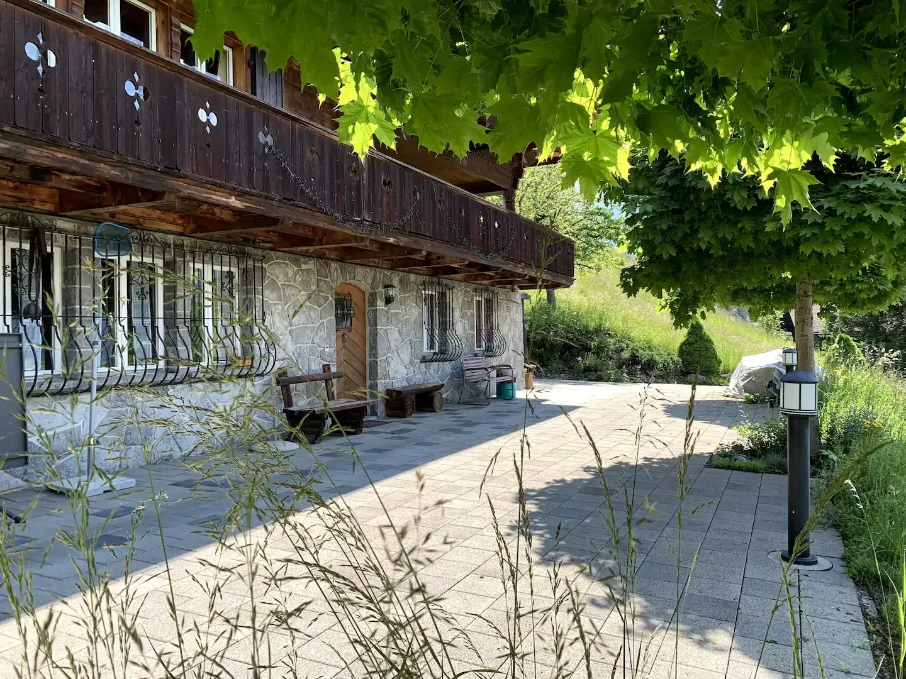
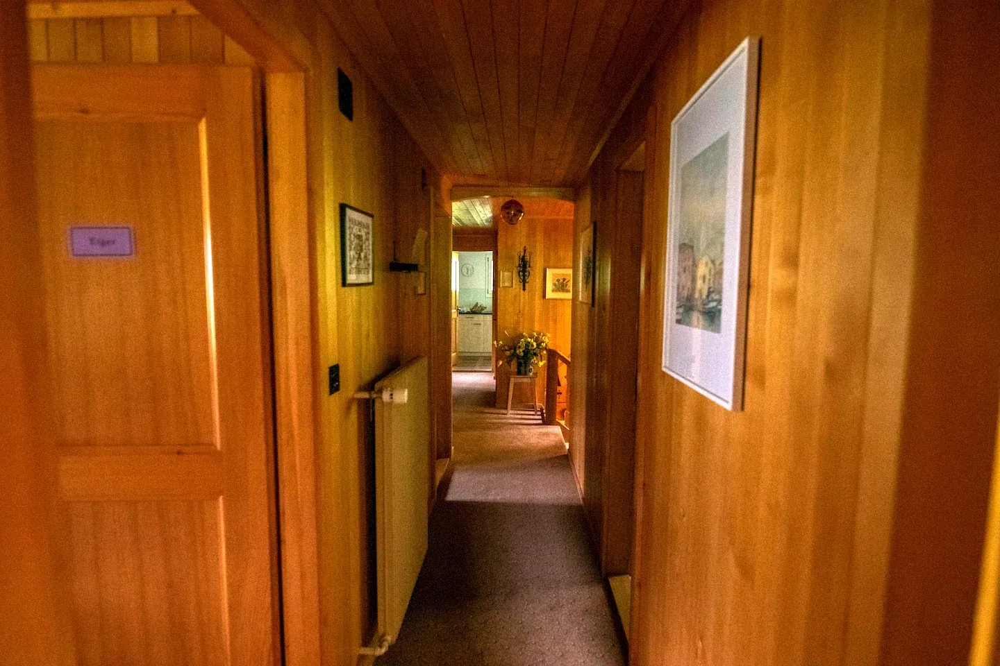
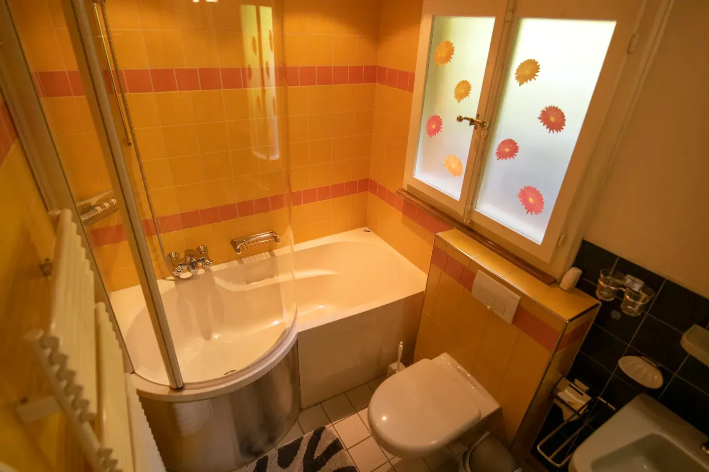

Chalet Steinegg
Abschalten und auftanken in Grindelwald
2 Stockwerke
6 Schlafzimmer
12 Betten
4 Badezimmer
Jetzt buchen
Willkommen im Chalet Steinegg, unserem geräumigen und gemütlichen Chalet in Grindelwald mit freiem Blick auf die Eiger-Nordwand und die
Berner Alpen. Mit seinen sechs Schlafzimmern auf zwei Etagen eignet es sich besonders für Familien und mittelgrosse Gruppen.
Das 1962 von der Familie erbaute und 2010 renovierte Chalet liegt am Südhang des Tales, 20 Gehminuten vom Dorfzentrum entfernt. Es bietet
eine geräumige und gemütlich eingerichtete Wohnung im klassischen Chaletstil für bis zu 12 Personen. Eine weitere Wohnung im zweiten Stock
ist durchgehend bewohnt.
Die Wohnung kann direkt über Airbnb gebucht werden. Bei Fragen könnt ihr uns
gerne per Email kontaktieren.
Wir freuen uns auf euren Besuch!
Familie Mayer
welcome
- 

- 
- 
Merkmale
- 6 Schlafzimmer in unterschiedlichen Grössen mit jeweils zwei Einzelbetten
- 4 Badezimmer, davon drei mit Dusche oder Badewanne
- Moderne Küche mit Mikrowelle, Geschirrspühler, Kaffeemaschine, Toaster und Wasserkocher
- Ess- und Wohnzimmer mit Cheminée
- Grosser, sonniger und gedeckter Balkon
- Vorplatz zum Verweilen mit Ping-Pong Tisch, Holzgrill, Sonnenstoren, Liegestühlen und Gartentisch
- Waschmaschine und Tumbler
- TV und WiFi
Anfahrt
- Öffentlicher Verkehr: Die Bushaltestelle «Grindelwald, Stein» befindet sich fünf Gehminuten vom Chalet.
-
Auto: Es stehen zwei Garagenparkplätze zur Verfügung. Es besteht jedoch keine direkte Zufahrt zum Haus. Die Plätze sind
fünf Gehminuten vom Haus entfernt.
Hausordnung
- Haustiere sind nach Absprache gestattet.
- Das Rauchen im Haus ist nicht erlaubt.
- Wir bitten euch auf die Nachbarn im zweiten Stock Rücksicht zu nehmen.